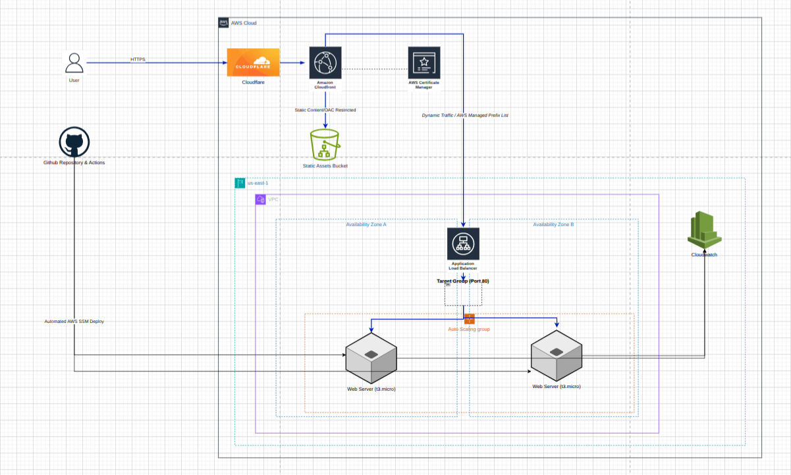

The Challenge
Deploy a production-style web app that is secure, scalable, globally cached, and automatically deployed — all within AWS Free Tier limits.
Served via CloudFront CDN · Routed by ALB · Hosted on EC2 · Deployed by GitHub Actions

Static assets (CSS, JS, images) delivered directly from Amazon S3
Teams new to AWS often struggle to connect the dots between EC2, load balancing, CDN caching, static asset delivery, and automated deployments. This guide walks through every phase — from IAM setup to a live HTTPS demo.
Deploy a production-style web app that is secure, scalable, globally cached, and automatically deployed — all within AWS Free Tier limits.
A living documentation site that teaches the architecture while demonstrating it live — served via CloudFront, balanced by ALB, hosted on EC2.
Bootcamp interns, junior cloud engineers, and anyone replicating a capstone-style end-to-end AWS deployment from scratch.
CloudFront → ALB → EC2 request flow, S3 static asset delivery, security hardening, Auto Scaling, CI/CD with GitHub Actions, and cost monitoring.
SSL/TLS via AWS Certificate Manager, enforced at CloudFront with HTTP → HTTPS redirect on the ALB.
Application Load Balancer distributes traffic across EC2 instances with active health checks.
CloudFront edge locations cache and deliver content globally with low latency.
GitHub Actions automatically deploys HTML to EC2 on every push to the main branch.
Key talking points for the live demo — no separate slide deck needed.